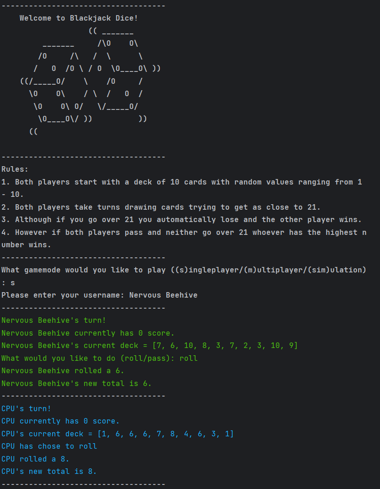
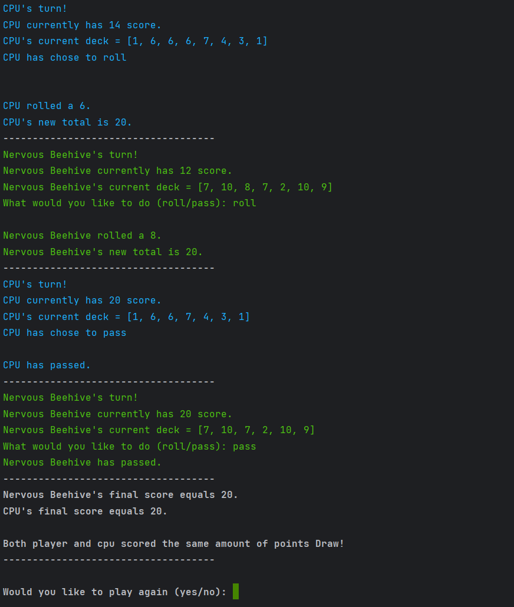

A small game I made in python inspired by the card game blackjack. You can choose to play singleplayer against a bot, local multiplayer with someone else or simulation were to bots play each other.
I used the colorama libary to add color to the game along with the build in random and os libaries.
 Rules:
1. Both players start with a deck of 10 cards with random values ranging from 1 - 10.
2. Both players take turns drawing cards trying to get as close to 21.
3. Although if you go over 21 you automatically lose and the other player wins.
4. However if both players pass and neither go over 21 whoever has the highest number wins.
Downloads:
Python File (21KB)© 2023 Nervous Beehive